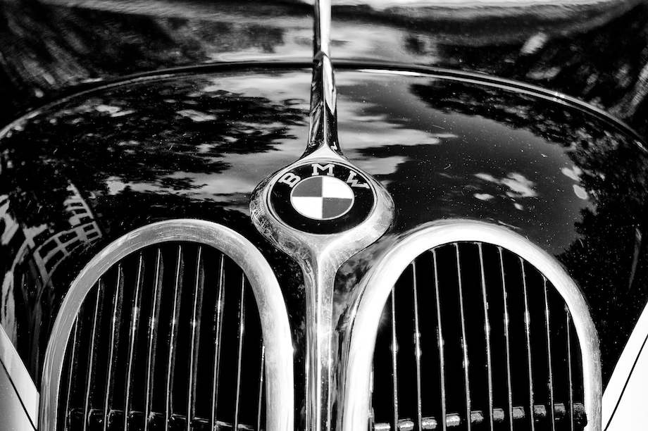

BMW: COMO TUDO COMEÇOU
A montadora iniciou suas atividades, em 7 de março de 1916, fabricando aviões durante a Primeira Guerra Mundial e tinha o nome de “Fábrica Bávara de Aviões”
(Bayerische Flugzeugwerke).
Mas com a derrota da Alemanha na Guerra e a assinatura do Tratado de Versalhes de 1919, o país foi proibido de fabricar aviões. Isso fez com que a empresa
se reinventasse no mercado para não declarar falência.
A decisão que a BMW tomou foi de passar a produzir motores. Disso veio um novo posicionamento de mercado e o famoso logotipo azul e branco em formato de
hélice que foi inspirado na bandeira da Bavária, uma região da Alemanha, e a referência ao seu tempo na aviação.
Além disso, a empresa entrou no ramo de motocicletas e lançou oficialmente seu primeiro modelo, R 32 com motor boxer de dois cilindros, em 1923 no Salão de
Berlim.Somente cinco anos depois, em 1928, é que se iniciou a fabricação de automóveis após a compra de uma fábrica que já produzia carros em Eisenach, no
centro da Alemanha.